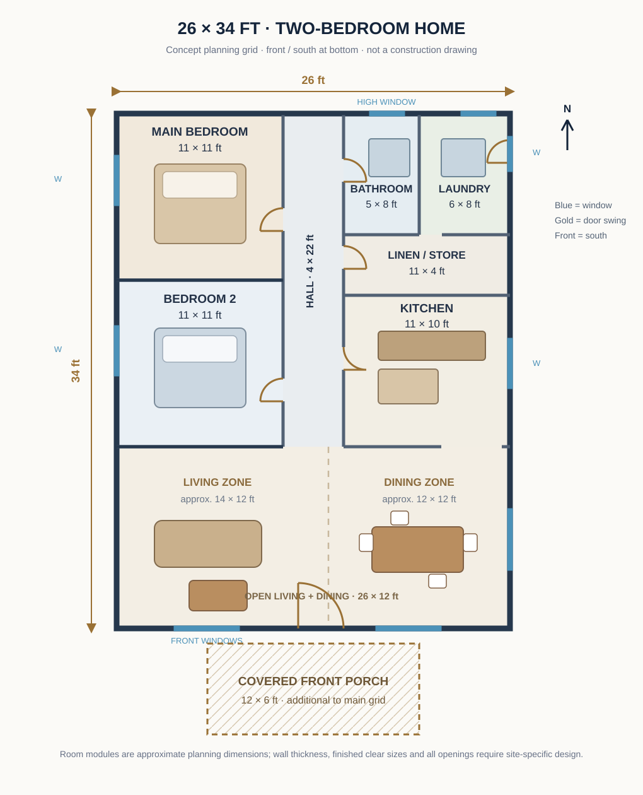
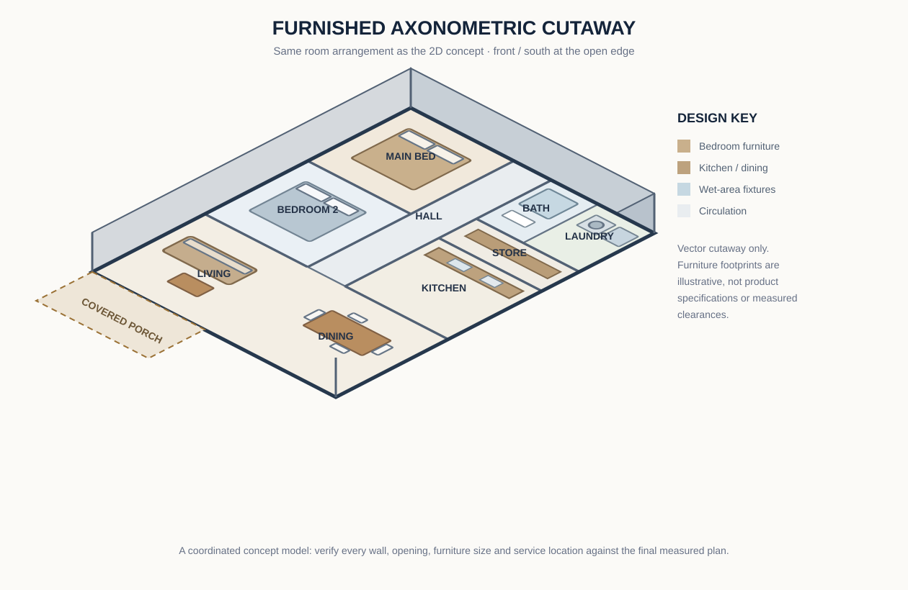
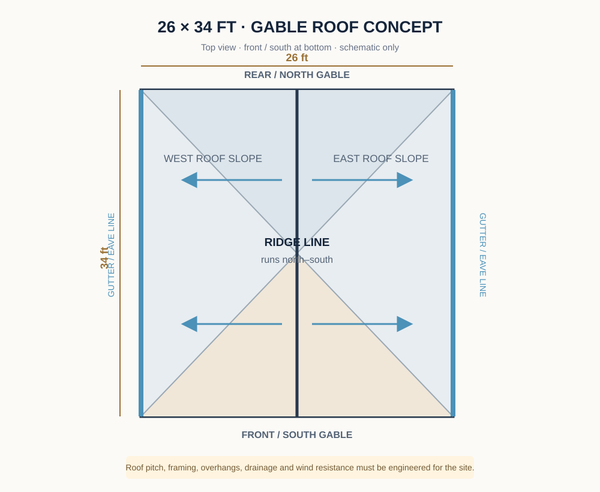
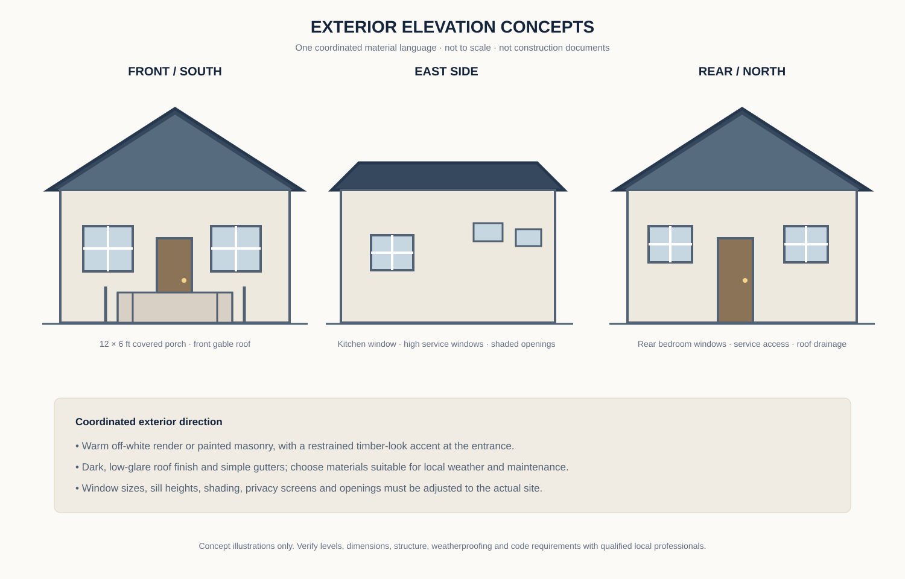

26 × 34-Foot Two-Bedroom Home: From 2D Plan to 3D Design
Follow one compact home concept through its floor-plan arrangement, furnished axonometric view, roof direction and coordinated exterior elevations.
A useful 3D home design should explain the same building shown in the 2D plan. Room positions, doors, windows, furniture, roof form and exterior openings must agree from one view to the next. This guide presents a compact two-bedroom concept as a coordinated visual study rather than a collection of unrelated inspiration pictures.
Important design status: All drawings on this page are original conceptual vector diagrams. They are not measured surveys, engineering drawings, permit plans, photorealistic renders or photographs of a completed house. The 26 × 34 ft planning grid and room modules are preliminary assumptions. A qualified local architect or building professional must adapt and verify the design for the actual plot, climate, soil, structure and applicable rules.
1. Concept brief and planning dimensions
The concept uses a nominal 26 × 34 ft rectangular planning grid, equivalent to 884 sq ft before adding a 12 × 6 ft covered front porch. The front faces south in the diagrams. The arrangement places the shared living and dining space near the entrance, a compact kitchen to the east, two bedrooms along the west side, and the bathroom and laundry close together on the service side.
The design is intended to show how a small home can be understood in both plan and volume. It is not a claim that every family, plot or climate should use this exact arrangement. A narrow site, a different road direction, neighbouring windows, prevailing wind or a need for accessible circulation could require a different plan.
2. Conceptual 2D floor plan

| Space | Concept module | Planning purpose |
|---|---|---|
| Open living and dining | 26 × 12 ft | Shared front zone, visually divided into a living area and dining area without a full-height partition. |
| Main bedroom | 11 × 11 ft | Double-bed zone with space reserved for a wardrobe and bedside storage. |
| Bedroom 2 | 11 × 11 ft | Second sleeping room that could also be planned as a guest room or study. |
| Central hall | 4 × 22 ft | Connects the shared area to the bedrooms and service spaces. |
| Kitchen | 11 × 10 ft | Compact work zone with a counter run, sink and appliance positions to be confirmed. |
| Bathroom | 5 × 8 ft | Compact wet room; fixture selection and clearances need a detailed layout. |
| Laundry | 6 × 8 ft | Washer, utility sink or storage, subject to actual appliance dimensions. |
| Linen / store | 11 × 4 ft | Shared household storage between the service rooms and kitchen. |
| Covered porch | 12 × 6 ft | Shaded arrival space outside the main planning grid. |
The room modules are rounded planning labels. Wall thickness, columns, built-in cupboards, door frames and finished surfaces reduce usable clear dimensions. Do not use the table to order materials or set out foundations. Have the final plan redrawn with actual wall build-ups and verified internal measurements.
3. How the furnished 3D view relates to the plan

The axonometric view makes the relationship between the spaces easier to understand. The front living and dining zone remains visually open, while the central hall provides a more private route to the bedrooms. The kitchen sits beside the dining zone, reducing the distance between food preparation and serving. The bathroom, laundry and storage are grouped together to make service coordination easier to study.
Living and dining
Use a compact sofa with a shallow coffee table in the living zone. Keep the main route from the entrance toward the hall free of loose chairs, plant stands and side tables. A rectangular dining table can sit closer to the kitchen opening. Before buying furniture, test the exact sofa depth, dining-chair pull-back space and the route between the table and the kitchen.
Bedrooms
The two bedrooms use similar nominal modules to make the concept flexible. In the main bedroom, position the bed so that wardrobe doors and bedroom entry do not collide. In the second bedroom, consider a smaller bed or a study desk only after drawing the real furniture footprints. Bedside tables, drawers and wardrobe shutters all need operating space.
Kitchen and service rooms
The kitchen counter is shown as a simple run, not a final working kitchen. Place the refrigerator, sink, preparation surface and cooking appliance in a sequence that suits the household. Confirm appliance ventilation, water points, drainage, electrical circuits and service access with the relevant professionals. The bathroom and laundry should be checked together for waterproofing, floor falls, ventilation and maintenance access.
4. Door and window coordination
The main entrance is shown on the south/front wall, opening into the shared living and dining zone. Bedroom doors are placed off the central hall. The bathroom also opens from the hall. A kitchen connection is shown toward the dining side, and the laundry has a service-side opening in the concept. These positions are starting points only; the final swing direction and opening width depend on furniture, structure, privacy, safety and local requirements.
| Opening | Indicative location | Check before finalising |
|---|---|---|
| Main entrance | South wall, near the centre of the open room | Door swing, porch level, weather protection and an unobstructed arrival route. |
| Bedroom doors | East walls of both bedrooms, opening to the hall | Bed and wardrobe positions, privacy and clear circulation. |
| Bathroom door | From the hall, near the service zone | Fixture clearances, ventilation and water-resistant detailing. |
| Kitchen connection | Between kitchen and dining side | Appliance doors, worktop layout and safe movement around hot surfaces. |
| Windows | Bedroom outer walls, kitchen wall, living frontage and high-level wet-area positions | Sun path, privacy, rain exposure, security, ventilation and shading. |
Do not copy the illustrated window sizes as code-compliant dimensions. A designer should assess orientation, neighbouring buildings, natural light, ventilation, privacy, safety and the actual window system. In a hot climate, external shading and rain protection may be as important as the glass area.
5. Roof form and drainage concept

A simple gable roof is used to give the front and rear elevations a clear roof shape. The ridge runs north–south, so the front and rear ends read as gables while the long east and west sides form the eaves. This can create a straightforward visual composition, but the actual roof system must be selected for local rainfall, wind exposure, span, material availability, maintenance and budget.
Roof pitch, framing sizes, tie-downs, bracing, overhangs, gutter capacity, downpipe positions and stormwater disposal are engineering and site-design decisions. Do not infer them from the diagram. A qualified professional should coordinate the roof with the structure, ceiling, electrical routes and rainwater system.
6. Front, side and rear exterior concepts

The front concept uses a restrained gable form, a covered porch, two shaded windows and a simple entrance door. A warm off-white wall finish can be paired with a limited timber-look accent and a dark roof finish. Keep decorative materials concentrated around the entry rather than covering every wall with feature cladding.
The east-side concept shows the kitchen window and smaller high-level service openings. The rear concept keeps the bedroom windows and service access legible without adding unnecessary projections. The west side should be reviewed separately for afternoon sun and privacy; the final design may need a deeper eave, screen, verandah or a different opening arrangement.
7. Interior character and material choices
For a compact home, use a consistent base palette so the living, dining and kitchen areas feel connected. A warm neutral wall colour, a durable matte floor finish and a small number of timber-look elements can provide visual warmth without making the rooms feel busy. Bedrooms can use softer textiles and practical closed storage. In wet areas, choose finishes according to slip resistance, moisture performance, cleaning and supplier guidance.
- Walls: Select a washable finish appropriate to the substrate and room use.
- Floors: Compare durable tile or another locally suitable finish; verify slip resistance and installation requirements.
- Joinery: Use measured cabinet drawings and confirm door, drawer and appliance clearances before fabrication.
- Windows: Choose frames, glazing, screens and shading suitable for the site's exposure and maintenance needs.
- Lighting: Combine general lighting with task lighting at kitchen counters, mirrors and reading areas.
- Ventilation: Provide a considered approach for the kitchen, bathroom and laundry; mechanical extraction may be required depending on the final design.
8. Electrical, plumbing and ventilation planning
Electrical planning should begin with the furniture plan, not after the walls are finished. Mark likely outlets for bedside charging, television and internet equipment, kitchen appliances, laundry equipment and cleaning tools. Decide where switches are convenient when entering each room. A qualified electrician must design circuits, protective devices, earthing, cable routes and load capacity to the applicable local requirements.
The bathroom, laundry and kitchen are grouped on the east side in this concept, which may help a designer study shorter service routes. It does not prove that the pipework can be installed as drawn. Confirm water pressure, drainage falls, inspection access, waterproofing, hot-water equipment, ventilation and maintenance access with qualified plumbing and building professionals. Avoid concealing joints or equipment where they cannot be inspected or serviced.
9. Construction sequence: concept to finished home
- Site investigation: Obtain a measured survey and review access, levels, drainage, soil conditions, neighbouring properties and orientation.
- Design development: Have the concept converted into coordinated architectural, structural and service drawings, with required local approvals identified.
- Setting out and foundations: A qualified professional should determine the foundation system from the site and structural design. The diagram does not specify foundation depth or reinforcement.
- Floor and wall construction: Confirm wall positions, openings, damp protection and any structural elements before construction proceeds.
- Roof structure and covering: Build only from approved roof and structural details, including bracing, connections, gutters and safe access.
- First-fix services: Coordinate electrical conduits, water supply, drainage and ventilation before closing walls or ceilings.
- Waterproofing and finishes: Test wet-area preparation, install finishes to manufacturer instructions and protect completed surfaces.
- Final checks: Inspect doors, windows, drainage, electrical protection, ventilation, water fixtures and maintenance access before occupation.
10. Approximate cost planning without invented prices
No reliable construction price can be calculated from a concept image alone. Costs vary by country, town, date, soil, access, labour, material specification, roof system, window quality, service connections, taxes and the amount of work completed by contractors. For a meaningful estimate, prepare a measured bill of quantities from the final professional drawings and obtain current local quotations.
| Cost group | Items to measure or quote |
|---|---|
| Site and ground work | Clearing, excavation, disposal, access, drainage and any site-specific preparation. |
| Substructure | Professionally designed foundations, ground beams, floor build-up and damp protection. |
| Walls and structure | Blocks or other wall materials, mortar, concrete, reinforcement, lintels and finishes. |
| Roof | Framing, covering, insulation if specified, fascia, gutters, downpipes and safe access. |
| Openings | Doors, windows, glazing, screens, locks and installation. |
| Services | Electrical installation, plumbing, drainage, ventilation, water heating and connections. |
| Finishes and fittings | Flooring, paint, ceilings, kitchen cabinets, bathroom fixtures, lights and hardware. |
| External work | Porch, paths, steps, stormwater disposal, boundary work and landscaping. |
Record the location, currency, quotation date, specification and exclusions beside every price. Add a contingency based on professional advice and the uncertainty of the project. Any example budget found online should be treated as a dated comparison, not a promise of what this house will cost.
11. How to develop a reliable 3D model
When turning this concept into a more detailed 3D model, use the same reference dimensions for every view. Model the external envelope and wall thickness first, then add partitions, door and window openings, roof geometry and floor levels. Only after those elements agree with the plan should furniture, finishes, lighting and landscaping be added.
For a useful review set, export a top-down furnished view, an eye-level front view, at least one side and rear view, and a roof-off cutaway. Compare each view against the 2D plan. If a window appears in the render but not on the plan, or if a door is hidden by a wardrobe, correct the model before sharing it. A beautiful render cannot resolve a poor layout or prove that a building is structurally safe.
Model review checklist
- Does every room in the 3D view match the position and approximate size shown in the 2D plan?
- Do doors open without striking furniture, walls or one another?
- Are window locations consistent across the plan and all elevations?
- Does the roof ridge, slope direction and gutter position match the roof plan?
- Can kitchen and bathroom fixtures be reached and maintained?
- Are the furniture footprints based on actual product dimensions before purchase?
- Are conceptual images clearly labelled so viewers do not mistake them for a completed building?
12. Image concepts and future render briefs
The four SVG figures above are the original visual assets currently included with this article. They are explanatory vector diagrams, not photographs or photorealistic renders. If a more realistic visual set is commissioned later, use consistent camera directions and the same approved model for every view. The following briefs describe the intended images; they do not claim that additional renders have already been produced.
- Furnished 3D top view: Create an accurate open-top axonometric architectural visualization of the same 26 × 34 ft single-storey two-bedroom concept. Preserve the 11 × 11 ft bedrooms on the west side, 4 ft central hall, east-side bathroom, laundry, store and kitchen, and the open 26 × 12 ft living-dining zone at the south/front. Show furniture at realistic scale, neutral warm finishes and clear door openings. Do not add rooms, windows or furniture that conflict with the approved 2D plan.
- Front exterior view: Show the same compact single-storey home from the south/front at eye level, with a front-facing gable, 12 × 6 ft covered porch, centred entrance, two shaded front windows, warm off-white wall finish and restrained timber-look entry accent. Keep roof proportions and openings consistent with the elevation concept. Label the image as a conceptual render, not a completed building.
- East-side view: Show the same home from the east, with the kitchen window and smaller high-level service openings in their coordinated positions. Include appropriate eaves, gutters and rainwater downpipes without inventing structural details.
- Rear view: Show the north/rear gable, the two bedroom window positions and the service access shown in the plan. Use the same roof, wall colour, window frame and material palette as the front view.
Alt-text rule: Describe only what is actually visible in each final image. Do not call a vector diagram a photograph, do not claim a render shows construction details that are hidden, and do not describe a conceptual image as a real completed home.
13. Limitations and professional review
This 26 × 34 ft design study is a visual planning exercise. It does not establish structural spans, foundation design, wall thickness, roof pitch, fire safety, accessibility, legal setbacks, ventilation compliance or approval status. It also does not account for every plot constraint, local climate condition or household requirement. Before building, commission site-specific architectural, structural, electrical and plumbing documents and obtain the necessary reviews and approvals from qualified local professionals and authorities.
For related planning topics, explore House Plans, Modern Homes, Interiors, Room Layout Ideas, Kitchen Layouts and Bathroom Layouts.